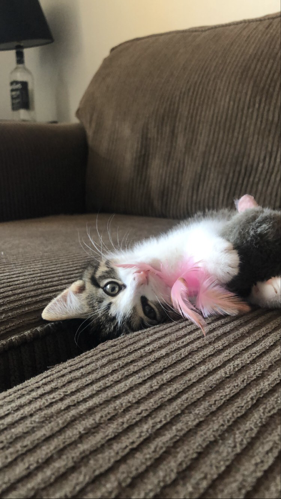

About Me
My name is Tristin, and I’m a 1st year student at AC. I spend a lot of time studying for school at the moment, however when I’m not doing that, I love to be outside hiking and enjoying nature. My boyfriend recently adopted a kitten, so I also have been dealing with that little rocket of energy the past few weeks, however he is adorable, so I really don’t mind at all. I am a huge animal lover, and if my roommates weren’t allergic to animals I would have a ton by now!
I work at a coffee shop and I love to make different drinks on the espresso. I definitely could be considered a caffeine addict. I do my fair share of cooking and baking, and it’s something I really enjoy. This time of year is great for all the fall veggies that are ready to be harvested, and there’s usually tons of pumpkin pie to go around at my house. For more leisure activities I can be found drawing, painting, or playing video games. I love my Switch and use it way more than I should.
"The only impossible journey is the one you never begin." -Tony Robbins